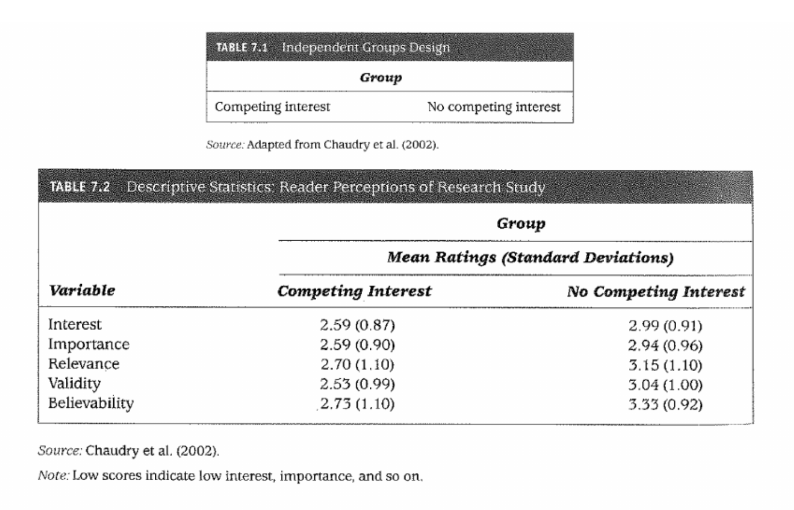
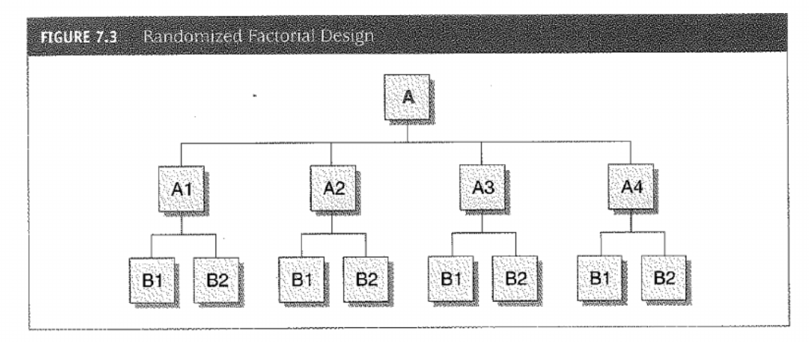

Experimental Design, Treatment Creation & AI Tools
POLS 681 Guest Lecture
Charles Crabtree, PhD
Senior Lecturer, School of Social Sciences, Monash University
K-Club Professor, University College, Korea University
February 2026

Today’s Roadmap (105 min)
| Part | Topic | Time |
|---|---|---|
| 1 | Experimental Design Foundations | 25 min |
| 2 | Treatment Creation & Construct Validity | 35 min |
| Break | 10 min | |
| 3 | AI Agents for Experimental Research | 25 min |
| 4 | Hands-On Exercise & Discussion | 10 min |
🎯 Goal: Bridge causal inference foundations → practical design → AI tools
Running example: Generating vignettes for a framing experiment on climate policy
Part 1: Experimental Design Foundations
25 minutes
From Potential Outcomes to Experiments
You’ve learned: τᵢ = Yᵢ(1) - Yᵢ(0) — but we never observe both potential outcomes
How randomization solves this:
| Without Randomization | With Randomization | |
|---|---|---|
| Problem | E[Y(0)|T=1] ≠ E[Y(0)|T=0] | Groups comparable in expectation |
| Threat | Selection bias, confounding | None (in expectation) |
| Solution | Control for observables | Unnecessary—handled by design |
⚡ Key: Randomization creates the counterfactual through group equivalence
Why Experiments for Causal Inference?
Observational approaches require strong assumptions:
Matching/Subclassification
- Assumes no unmeasured confounds
- Selection on observables only
Difference-in-Differences
- Assumes parallel trends
- No anticipation effects
✅ Experiments: Randomization ensures E[Y(0)|T=1] = E[Y(0)|T=0]
No selection bias, no omitted variable bias—by design
Experimental Design Types
Randomized Groups Design — One IV

- Treatment vs. Control (or multiple treatment arms)
- Random assignment ensures comparability
- Our example: Economic frame vs. Control frame on climate attitudes
Factorial Designs — Multiple IVs

Advantages:
- Test main effects of each factor
- Test interactions (moderation)
- More efficient than running separate experiments
Our example extended: 2×2 design (Economic vs. Moral frame) × (Expert vs. Lay source)
Factorial Example: 2×2 Design
| Expert Source | Layperson Source | |
|---|---|---|
| Economic Frame | n=100 | n=100 |
| Moral Frame | n=100 | n=100 |
Three questions answered:
- Main effect of frame: Economic vs. moral → attitudes? (average across sources)
- Main effect of source: Expert vs. lay credibility? (average across frames)
- Interaction: Does frame effectiveness depend on source?
💡 Power note: Need ~400 total for main effects; ~1,600 for interactions
📝 Padlet #1: Your Research Question (10 min)
Post to Padlet → padlet.com/crabtree/unm1
- Research question: What causal effect do you want to estimate?
- Treatment: What manipulation would test this?
- Outcome: What would you measure?
- Design: Randomized groups or factorial?
Example post: “Does economic framing increase climate policy support? Treatment: economic vs. moral frame. Outcome: 7-pt support scale. Design: 2×2 with source credibility.”

10:00
Part 2: Treatment Creation & Construct Validity
35 minutes
What Makes a Good Treatment?
The goal: Manipulate exactly what you intend—nothing more, nothing less
| Confound Type | Example | How to Check |
|---|---|---|
| 📏 Length | Treatment longer than control | Word count across conditions |
| 📖 Complexity | Different reading levels | Flesch-Kincaid scores |
| 😤 Emotional tone | Varying intensity | Sentiment analysis |
| 👤 Demographics | Names signal race/gender | Audit for implicit cues |
⚠️ The treatment package problem: Your vignette = intended manipulation + all these confounds bundled together
Information Equivalence
The core principle: Conditions should differ only in the intended manipulation
Example vignette (economic frame):
“A new solar installation program in Arizona has created 2,500 jobs and is projected to save households $800 annually on electricity bills…”
| Economic Frame | Moral Frame | |
|---|---|---|
| Topic | Solar program in Arizona | Solar program in Arizona |
| Word count | 165 words | 165 words |
| Reading level | 8th grade | 8th grade |
| Only difference | Jobs, savings, growth | Responsibility, stewardship |
💡 If conditions differ on anything else, you can’t attribute effects to your treatment
The Treatment Package Problem (Porter & Velez 2022)
Problem: Even with information equivalence, one vignette bundles treatment with idiosyncratic content
That Arizona solar vignette includes:
- The economic frame (what you intend to test)
- But also: Arizona specifically, solar specifically, “$800” specifically, your exact wording…
Can you attribute the effect to the frame? Or to Arizona? Or to solar?
Solution: Multiple vignettes per condition (3-5 each)
| Economic Frame Vignettes | Moral Frame Vignettes |
|---|---|
| Arizona solar + jobs | Arizona solar + responsibility |
| Texas wind + savings | Texas wind + stewardship |
| Michigan EVs + growth | Michigan EVs + future generations |
→ Average effect isolates the frame from idiosyncratic features
Construct Validity for Treatments
Core question: Are we manipulating what we think we’re manipulating?
| Approach | Method | When to Use |
|---|---|---|
| Expert review | Blind condition identification | Early development |
| Pilot testing | Manipulation checks (N=30-50) | Pre-registration |
| Automated checks | LLM ratings of dimensions | Batch validation |
Manipulation check example:
“To what extent did this article emphasize economic benefits? (1-7)”
- Economic frame should score significantly higher than moral frame
- If not, treatment isn’t working—iterate before fielding
Quality Control Checklist
Before fielding (automate these with R script):
| Check | Target | Tool |
|---|---|---|
| ✅ Length | ±10% across conditions | stringr::str_count() |
| ✅ Reading level | Same grade level | quanteda.textstats |
| ✅ Sentiment | Matched or intentionally varied | tidytext |
| ✅ Manipulation | Pilot shows intended difference | Survey |
| ✅ Realism | Naive readers believe it | Qualitative check |
⚠️ LLM pitfall: Generated text often too polished—add natural variation
Face Validity
Does it look/sound real?
| Red Flag | Example | Fix |
|---|---|---|
| 🚫 Unnatural language | “As a concerned citizen…” | Use prompt: “casual tone” |
| 🚫 Too perfect | No hedging, perfect grammar | Add natural variation |
| 🚫 Implausible | Would this really happen? | Ground in real examples |
Quick tests:
- Read aloud—does it sound like a real article?
- Show to naive reader—“Is this real or AI-generated?”
- Side-by-side with actual news articles
BREAK
10 minutes
Return at [time]
Part 3: AI Agents for Experimental Research
25 minutes
What’s an AI Agent?
💬 Chat Interface (ChatGPT web)
- You ask question
- Get answer
- Copy code → paste → run
- You execute everything
Assistant role
🤖 AI Agent (Warp, Claude Code)
- You give high-level goal
- Agent plans steps
- Agent runs commands
- It does the work
Collaborator role
💡 Key difference: Agents have “hands on keyboard”—they execute, not just advise
When to Use Each Paradigm
AI agents operate your computer. They create files, run scripts, move data, execute commands. It’s a new way of controlling your system.
| Task | Chatbot (no system access) | Agent (runs your computer) |
|---|---|---|
| Design 1 vignette | ✅ Iterate with feedback | |
| Generate 100 vignettes | ✅ Batch process | |
| Debug unexpected output | ✅ Step through | |
| Run validation pipeline | ✅ Executes R scripts | |
| Learn new technique | ✅ See each step |
🎯 Rule of thumb: Use chatbots when you don’t want to change files; use agents when you need automation
Prompt Engineering: 5-Part Anatomy
| Part | Purpose | Example |
|---|---|---|
| 1. Role | Set expertise | “You are an experimental social scientist…” |
| 2. Task | What to produce | “Generate 3 vignettes about climate policy…” |
| 3. Context | Why it matters | “For a survey experiment on framing effects…” |
| 4. Constraints | Rules to follow | “150-200 words, 8th grade, neutral tone” |
| 5. Format | Output structure | “Return as JSON with fields: id, text, word_count” |
💡 Constraints are key: This is where you prevent confounds
Example: Complete Prompt
ROLE: You are an expert experimental social scientist specializing in
survey materials for political science research.
TASK: Generate 3 news vignettes about climate policy emphasizing
economic benefits of green energy.
CONTEXT: Survey experiment testing economic vs. moral framing effects
on climate policy support among US adults.
CONSTRAINTS:
- Length: 150-175 words each (strict)
- Reading level: 8th grade Flesch-Kincaid
- Tone: Neutral, journalistic (no advocacy language)
- No politician names or partisan cues
- Vary policies: solar, wind, EVs
FORMAT: JSON array: [{"id": 1, "text": "...", "words": N, "policy": "..."}]→ See code/generate_vignettes.R for implementation
💻 Live Demo: Treatment Generation
Demo workflow (backup: code/generate_vignettes.R):
- Warp prompt: “Generate 6 vignettes using the prompt in
prompts/economic_frame.txt” - Validation: Run
code/validate_vignettes.R- Word counts within range?
- Reading levels matched?
- Sentiment balanced?
- Iterate: Fix any issues, regenerate
⚠️ Key principle: Generate → Validate → Iterate (never trust raw output)
Validation Workflow
Automated checks (code/validate_vignettes.R):
# Check word counts
vignettes |> mutate(words = str_count(text, "\\w+")) |>
summarize(mean = mean(words), sd = sd(words), range = max(words) - min(words))
# Check reading level
library(quanteda.textstats)
textstat_readability(corpus(vignettes$text), measure = "Flesch.Kincaid")LLM validation prompt (rate dimensions 1-7):
- Economic emphasis?
- Moral emphasis?
- Emotional intensity?
- Political lean?
Document everything for pre-registration and transparency
Part 4: Hands-On Exercise & Discussion
10 minutes
📝 Padlet #2: Write Your Prompt
Post to Padlet → padlet.com/crabtree/unm2
Write a 5-part prompt for YOUR research question:
Role | Task | Context | Constraints | Format
Checklist — Does your prompt specify:
- ✅ Word count range?
- ✅ Reading level?
- ✅ Tone?
- ✅ What to avoid?
- ✅ Output structure?

10:00
Key Takeaways
Randomization solves the fundamental problem — no confound control needed
Treatment packages are dangerous — use multiple vignettes per condition
Construct validity requires checking — expert review + pilots + automated
AI agents accelerate generation — but always validate (generate → check → iterate)
5-part prompts prevent confounds — constraints are where validity lives
📦 Take with you: code/generate_vignettes.R + code/validate_vignettes.R + prompts/
Q&A
Questions?
- Experimental design?
- Treatment creation?
- AI tools?
- Validity?
💬 Discussion: What’s one thing you’ll apply to your research?
Next steps for you:
- Pre-register your design (OSF, AsPredicted)
- Use the R scripts to generate + validate materials
- Pilot test with manipulation checks before fielding
Resources
Key readings:
- Porter & Velez (2022). Placebo Selection in Survey Experiments. Pol. Analysis
- Velez & Liu (2025). Tailored Experiments & Polarization. APSR
Tools:
Today’s code:
code/generate_vignettes.R # Generation with OpenAI API
code/validate_vignettes.R # Automated validation checks
prompts/economic_frame.txt # Example 5-part prompt
prompts/warp_commands.md # Warp agent prompts→ GitHub: github.com/crabtree-charles/unm
Thank You!
Charles Crabtree
Senior Lecturer, School of Social Sciences, Monash University
K-Club Professor, University College, Korea University
📧 charles.crabtree@monash.edu
🌐 charlescrabtree.com